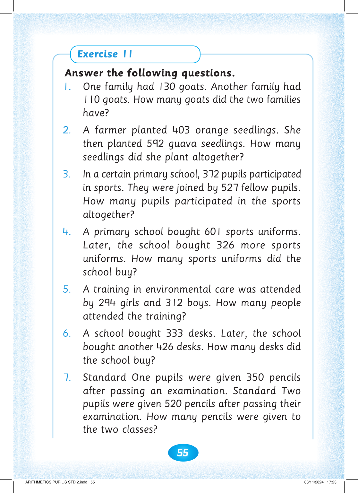

55


Exercise 11

Answer the following questions.

1. One family had 130 goats. Another family had
110 goats. How many goats did the two families
have?
2. A farmer planted 403 orange seedlings. She
then planted 592 guava seedlings. How many seedlings did she plant altogether?
3. In a certain primary school, 372 pupils participated
in sports. They were joined by 527 fellow pupils.
How many pupils participated in the sports
altogether?
4. A primary school bought 601 sports uniforms.
Later, the school bought 326 more sports
uniforms. How many sports uniforms did the
school buy?
5. A training in environmental care was attended by 294 girls and 312 boys. How many people attended the training?
6. A school bought 333 desks. Later, the school
bought another 426 desks. How many desks did
the school buy?
7. Standard One pupils were given 350 pencils
after passing an examination. Standard Two
pupils were given 520 pencils after passing their
examination. How many pencils were given to the two classes?


ARITHMETICS PUPIL'S STD 2.indd 55
06/11/2024 17:23